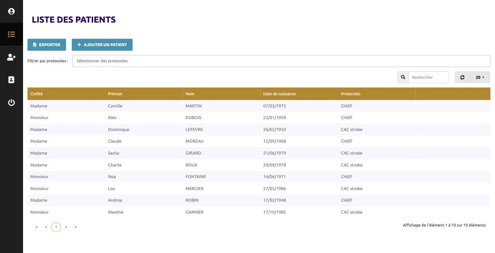
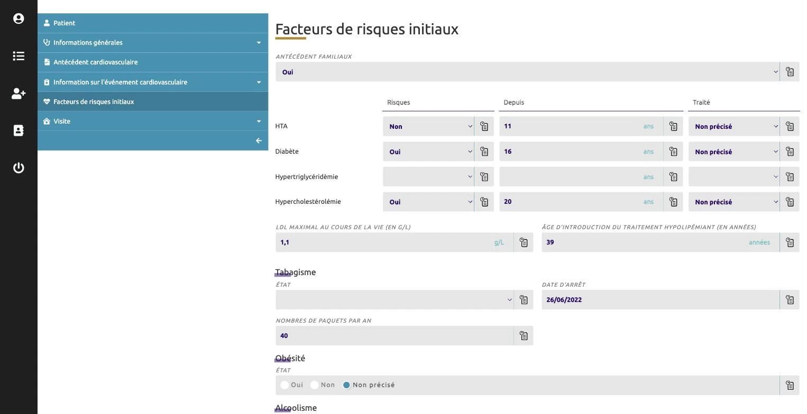
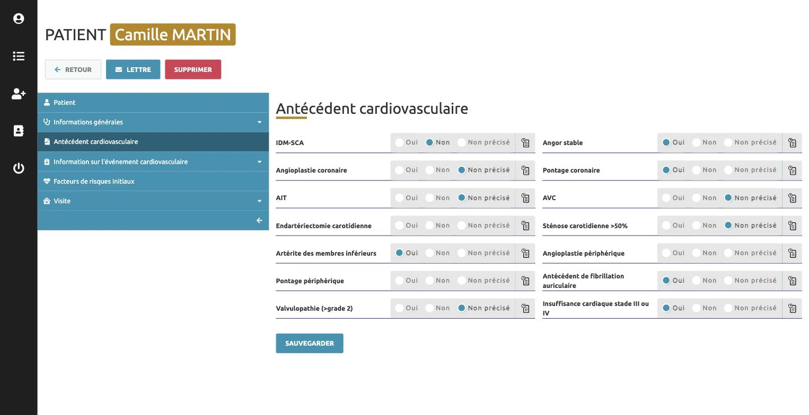
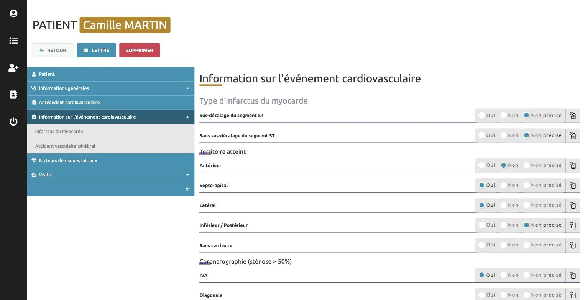
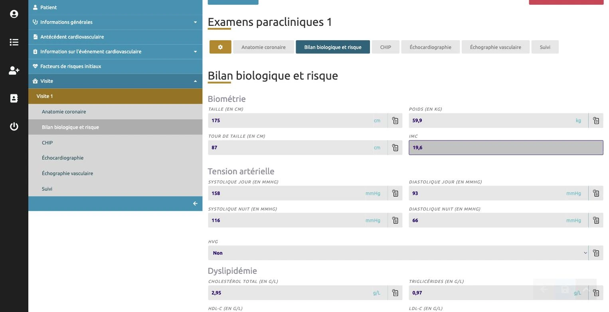

La promesse
Des données qu’on peut publier.
Chaque champ attend un type de réponse précis et refuse le reste. Chaque correction s’ajoute à l’ancienne valeur, datée et signée. Six mois après la visite, tout reste explicable.
Projet · Application métier, recherche clinique
Le carnet de bord de deux études cliniques : chaque mesure à sa place, chaque correction tracée.

Deux études cardiovasculaires recueillaient leurs données dans des tableurs : un fichier par personne, des colonnes qui ne voulaient pas dire la même chose d’un poste à l’autre, et aucun moyen de savoir qui avait modifié quoi. En recherche clinique, une donnée qu’on ne peut pas justifier est une donnée qu’on ne peut pas publier.
La promesse
Des données qu’on peut publier.
Chaque champ attend un type de réponse précis et refuse le reste. Chaque correction s’ajoute à l’ancienne valeur, datée et signée. Six mois après la visite, tout reste explicable.
2
protocoles suivis : CHiEF et CAC stroke.
5
volets, dans l’ordre de la consultation.
6
examens par visite : biométrie, tension, bilan biologique…
Tracé
Qui, quand, pourquoi : sur chaque champ, sans jamais effacer.




Horus est le plus ancien projet que nous maintenons : une application qui a traversé les années sans perdre une donnée.
La liste des patients se filtre par étude et s’exporte quand vient le moment d’analyser.
Le dossier suit l’ordre de la consultation ; les erreurs de format sont bloquées à la source.
Chaque écriture est horodatée et signée : l’historique tient l’audit.
Corrections, évolutions, mises à jour : nous restons l’interlocuteur des années après la mise en ligne.
Décrivez-le en quelques lignes. Nous répondons sous 48 heures ouvrées, avec des questions, un délai et un ordre de prix.
Nous contacter